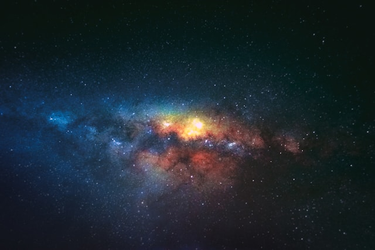

Exploring the Outer Rim
Venture beyond the known boundaries of the galaxy and explore the enigmatic outer rim with The Spacers Guild. Here, amidst the cosmic wilderness, untold wonders await discovery. From uncharted planets to ancient ruins, the outer rim offers limitless opportunities for exploration and adventure.
Beyond Our World
Hidden Treasures
Lost Temples of Zorath
Discover the ancient temples of Zorath hidden amidst the dense jungles of an uncharted planet. Rumored to hold the secrets of a long-forgotten civilization, these mysterious ruins beckon intrepid explorers to unlock their enigmatic past.
Crystal Caverns of Tethys
Journey into the depths of Tethys' crystal caverns, where shimmering formations of otherworldly beauty await. These subterranean wonders hold not only exquisite treasures but also clues to the planet's geological history and cosmic origins.
Chart Your Course
Ready to embark on your next cosmic adventure? Contact The Spacers Guild today to begin your journey into the unknown.
Phone: 555-807-7634
Email: spacersguildtravel@planetoid.com